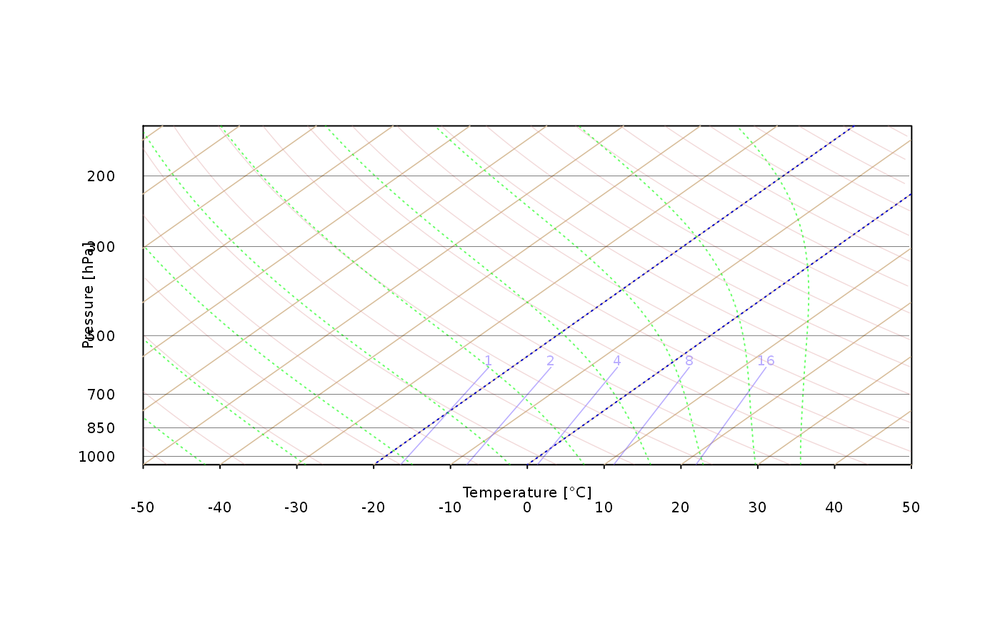
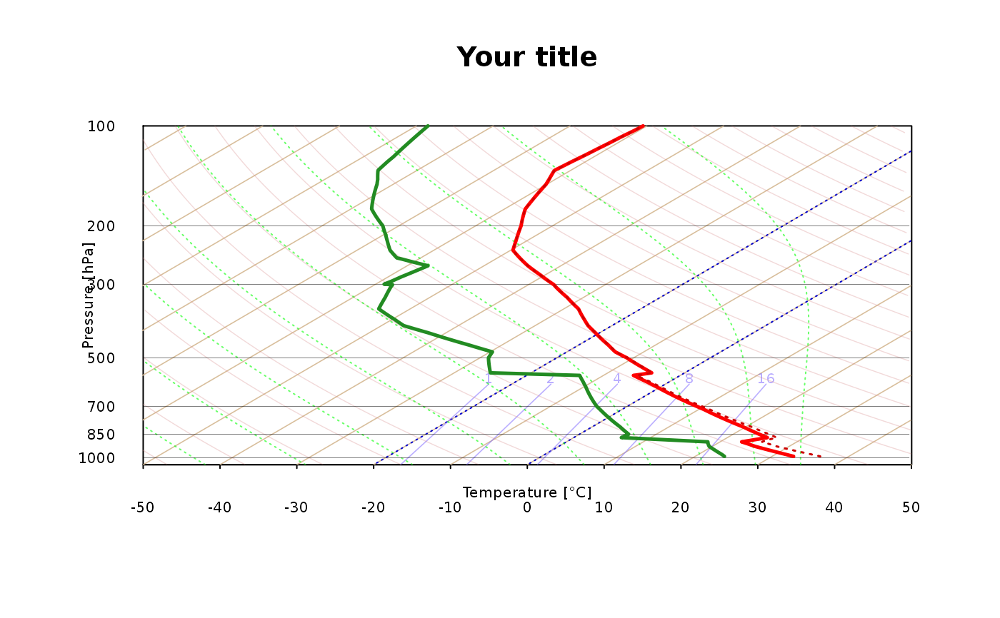

Function for plotting a customized version of the Skew-T diagram. Please note that drawing Skew-T may require increasing size or modifying aspect ratio of plotting window in order to provide readable results.
skewt_plot( ptop = 100, isoterms_col = "#d8be9b", temp_stripes = FALSE, mixing_ratio_col = "#8470FF90", dry_adiabats_col = "#d6878750", moist_adiabats_col = "#00FF0095", deg45 = FALSE, isotherm0 = TRUE, ... )
| ptop | Pressure top level to be used for plotting diagram. Valid options: 200, 150, 100 (default) and 50 hPa |
|---|---|
| isoterms_col | color to be used for drawing dry isoterms |
| temp_stripes | logical, whether to draw color stripes for isotherms |
| mixing_ratio_col | color to be used for drawing mixing ratio isolines and labels. If set to NA or empty string isolines are not drawn |
| dry_adiabats_col | color to be used for drawing dry adiabats. If set to NA or not provided drawing lines skipped |
| moist_adiabats_col | color to be used for drawing moist adiabats. If set to NA or not provided drawing lines skipped |
| deg45 | whether to preserve 45 degrees for diagonal isolines on Skew-T diagram regardless ploting window aspect ratio. [Logical, default: FALSE] |
| isotherm0 | whether to deliminate 0 degree Celsius isother[Logical, default: TRUE] |
| ... | additional (mostly graphical) parameters to be passed |
skewt_plot(ptop = 100)skewt_plot(ptop = 150, temp_stripes = FALSE) # na color stripes for temperatureskewt_plot(ptop = 100)title("Your title")#> #> #>#> #> #>output <- sounding_export(pressure, altitude, temp, dpt, wd, ws) skewt_lines(output$dpt, output$pressure,type='l',col='forestgreen',lwd = 2.5)